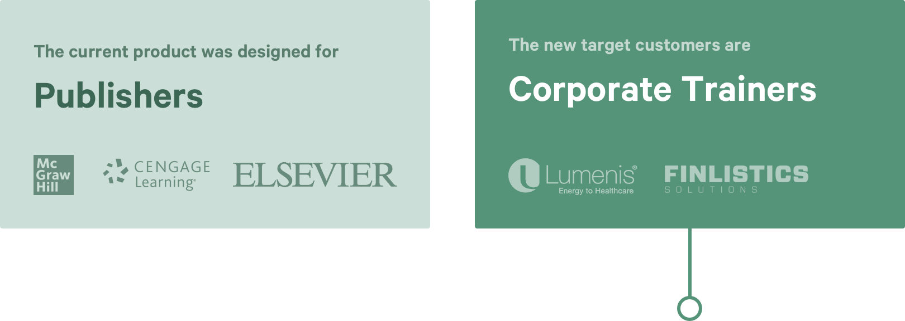
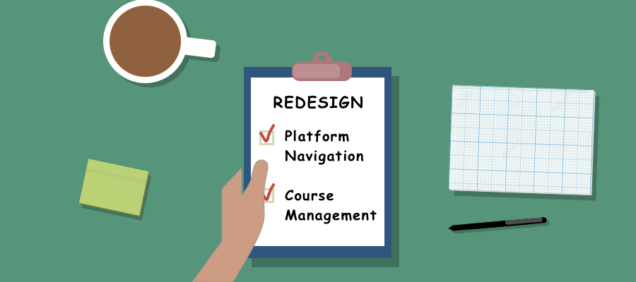
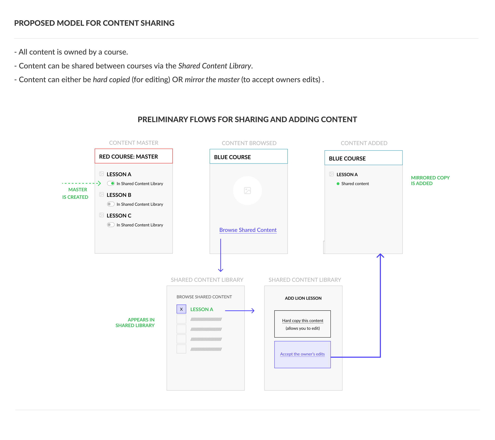
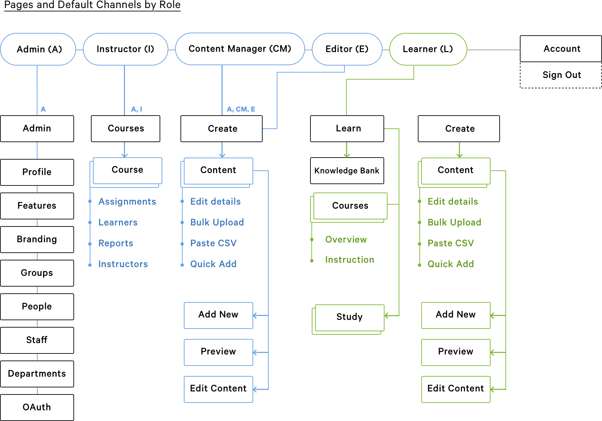
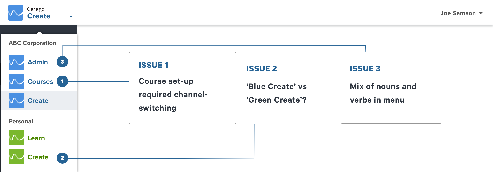
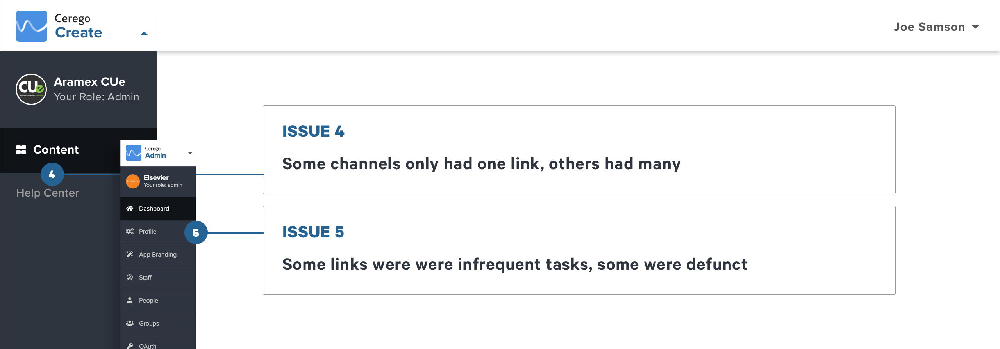
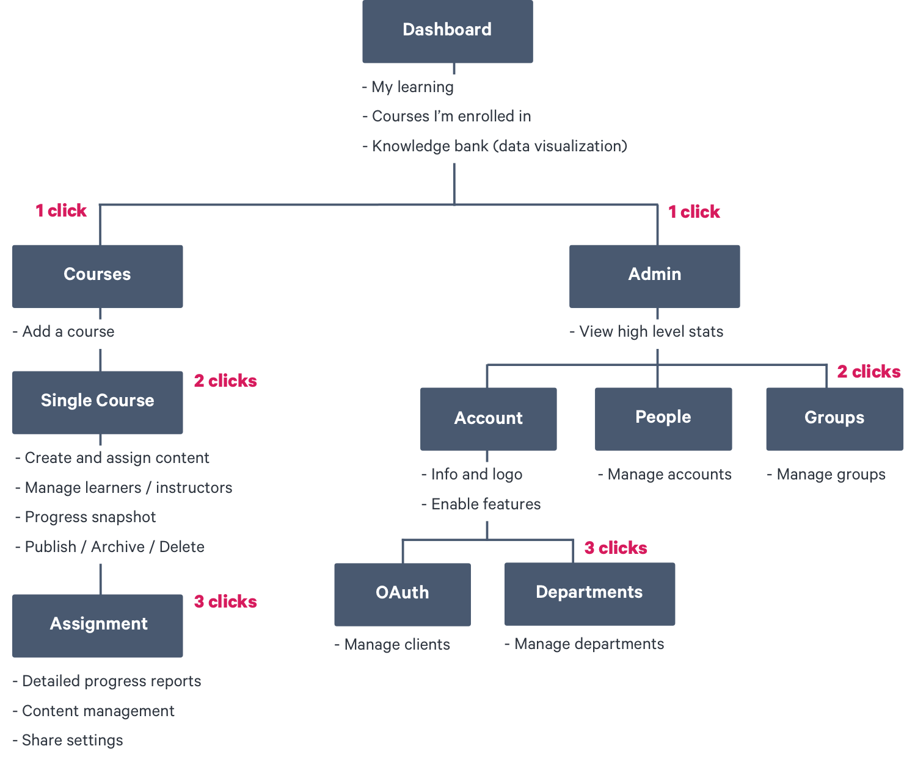
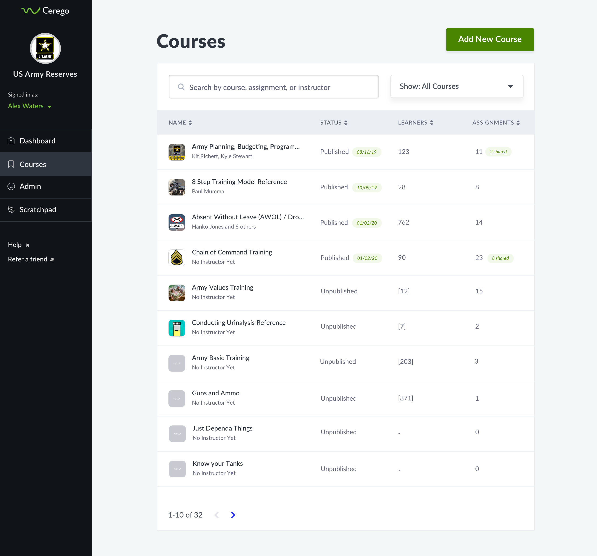
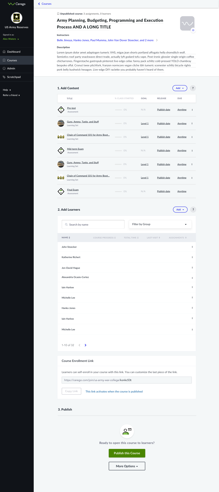
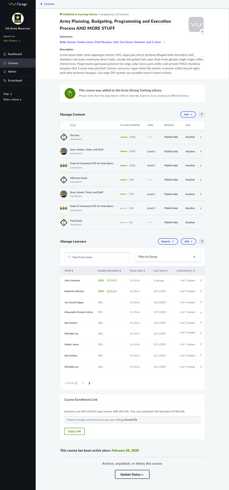

Cerego is an adaptive learning platform designed around the science of memory. Most new learning is forgotten within a week. Cerego helps students build knowledge that lasts with a distributed practice algorithm. Content is used in higher education, corporate training, and the military.
The Problem

COURSE MANAGEMENT WORKFLOWS WERE AWKWARD FOR CORPORATE CUSTOMERS
Cerego's platform was designed for the needs of textbook publishers (such as McGraw Hill and Elsevier), who needed to create a library of adaptive learning content and export it into their respective 3rd party platforms. Over time the business grew to include a learning management system for small-to-medium sized businesses. Many features were built on top of the existing nagivation, and corporate customers required a lot of training to learn Cerego's course management workflow. In particular, it was unexpected that content had to be built in a separate library and imported into a course.
Revamping the course management workflow required 2 design challenges: improve the overall platform navigation , and redesign the course management interface to include content creation.

Research & Discovery
Before jumping into a design solution, we (a product manager and myself) further explored the problem space with several methods:
1. Data analysis to audit usage of different course management features
2. Customer interviews to assess the needs, goals, and workflows around course management
3. Employee interviews to validate hypotheses about our new “corporate trainer persona"
Insights: The data revealed that the typical corporate account launched approximately 25 courses with around 40 learners per course. It also revealed that some legacy features were rarely used , such as course cloning, and bulk course publishing.
THE BIG PAINPOINT: HAVING TO LEAVE A COURSE TO MAKE CONTENT
Employee and customer interviews confirmed the initial hypothesis that that users desired workflow was to first to create a course, and then build content directly inside the course.
Despite this, around half of corporate trainers interviewed still required the abiity to share content between courses. There were mixed needs around the type of sharing as well. Some clients said it that it was important for copies to mirror the content of the original (and all changes made), whereas others wanted content to hard copy into other courses so editing was possible.

Although it required more engineering work, we elected to make it possible for users to decide whether they wanted a hard copy or to accept edits from the master copy. The alternative solution of pushing edits out to courses from a master course, was deemed to be overly complex.
Part 1: Redesigning the Nav
The goal of this project was two-fold: (1) improve the overall navigation for all signed in users, and (2) move all content management into courses. One big constraint was that the new navigation should not significantly impact the layouts of other areas of the site.
ASSESSMENT OF THE CURRENT NAVIGATION

In order to rethink the information architecture, I mapped all key areas and flows of the platform. The results helped me see several pages in Admin channel that could be grouped, or could be put lower in the hierarchy for account set-up. The results of the research and discovery phase surfaced several other frequent complaints with the current navigation.


Redesigning the core nav
The previous navigation included a top nav bar "product switcher" which updated options in the side nav. Some products had no need of this side nav, whereas others needed a multi-level nav. One of the goals of this project was to create a very simple navigation and use breadcrumbs to get back from deeper areas of the site. In order to create a mobile-friendly experience, we opted to provide a single breadcrumb to take the user back up one level.
GOAL: COMBINE COURSE AND CONTENT MANAGEMENT

Wireframing and user testing
The design process began with sketching and paper prototypes. Iterations became digital, with increasingly higher fidelity. Using Invision, we tested a medium-fidelity course management prototype with 3 newer customers in our target vertical.
One key finding was that users wanted more clarification on how due dates would behave for users (ex: what happened after the date passed). We opted to put a help button above each table to address questions.
Final designs: multiple states

Full course list

Empty course (leads you to your first step)

Set up, but unpublished

Published course

Published to the learning library (self-enrollment)

Archived Course

This project launched in April 2020. As of mid-June, the customer success team reported that their new onboarding time has been cut in half because of the new designs. Another success metric that we will track is the percentage of corporate customers choose to migrate over to our new version (70% is the target for that KPI). Other targets for the new nav and course management designs are a 20% reduction in total training time for Cerego's customer success managers. Cerego will continue to maintain the former version for publishers and others. We are confident this redesign will improve the user experience for our target customer, and I look forward to evaluating the results of this launch.